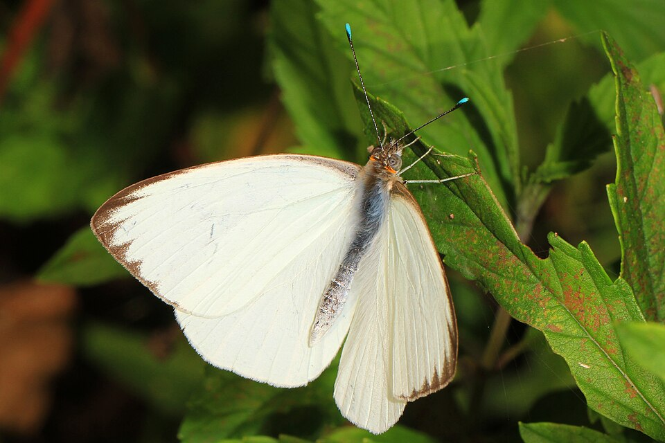
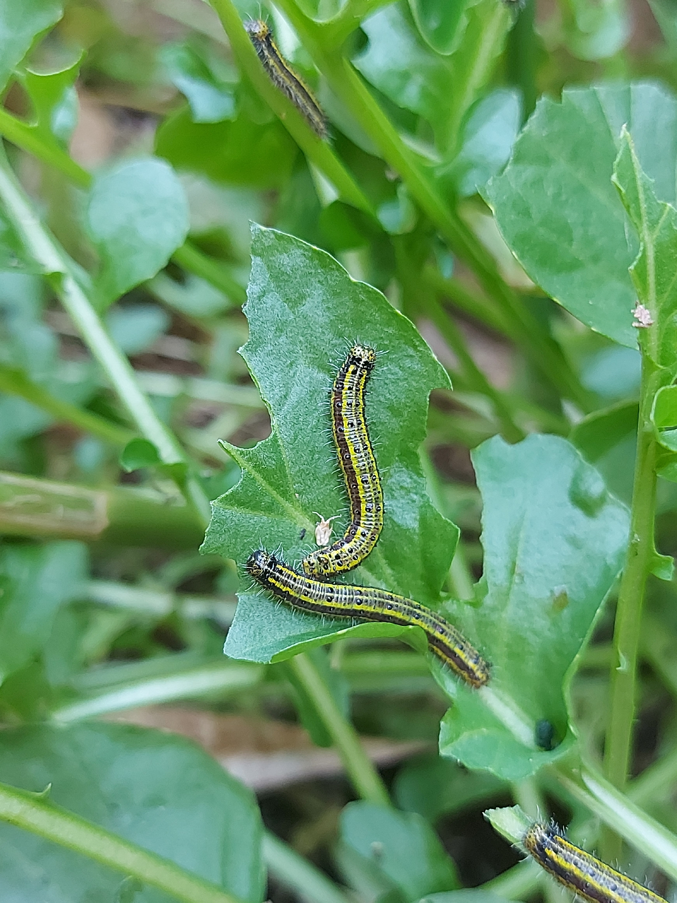

Ascia monuste
PossibleCoastal, salt-edge, sometimes inland as a visitor. Local flights more than a long-distance migrant story. Thin this August compared with White Peacock.

Salt marsh, beach, mangrove edge, coastal lots.
Saltwort
Batis maritimacoastal searocket
Cakile lanceolataVirginia peppergrass
Lepidium virginicumbayleaf capertree
Capparis flexuosaLarger and cleaner than a cabbage white. Turquoise antennal clubs help.
Local coastal movements, not a long-haul migrant.